ROL: PROVEEDOR DE INSUMOS¶
Gestión de Usuarios (perfil Administrador)¶
Listar Usuarios¶
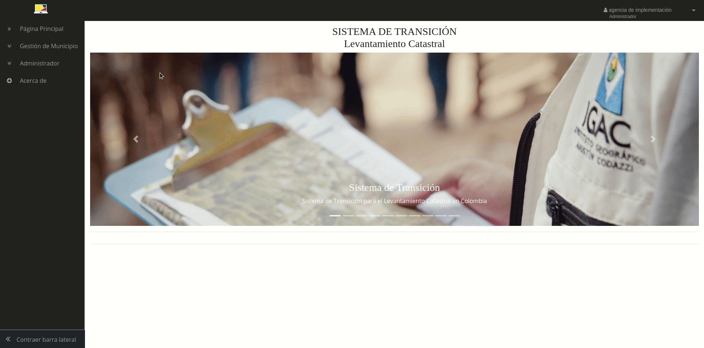
Registrar Usuarios¶
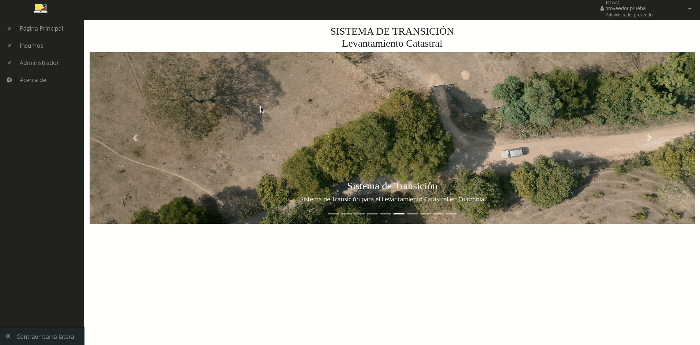


Crear Área de Trabajo¶

Gestión de Insumos¶
Atención a peticiones de creación de insumos (perfil Administrador)¶
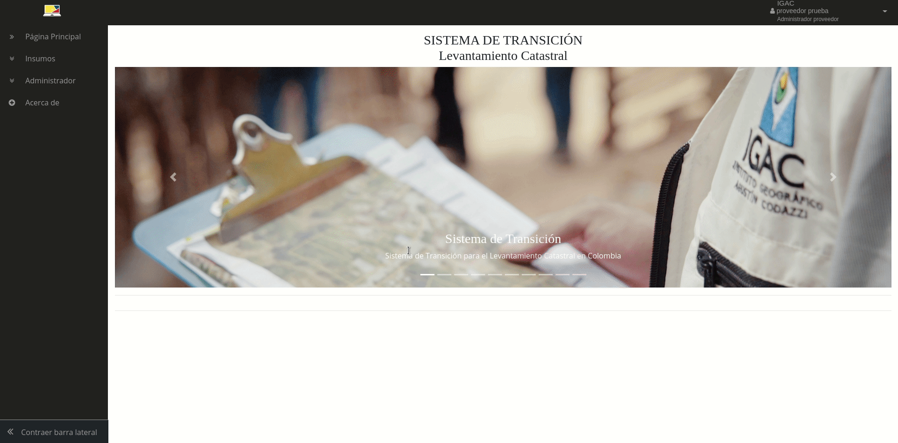
Caracterización de insumos (perfil Administrador)¶
Solicitudes pendientes (perfil Técnico)¶
 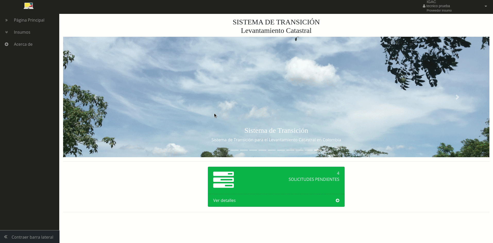
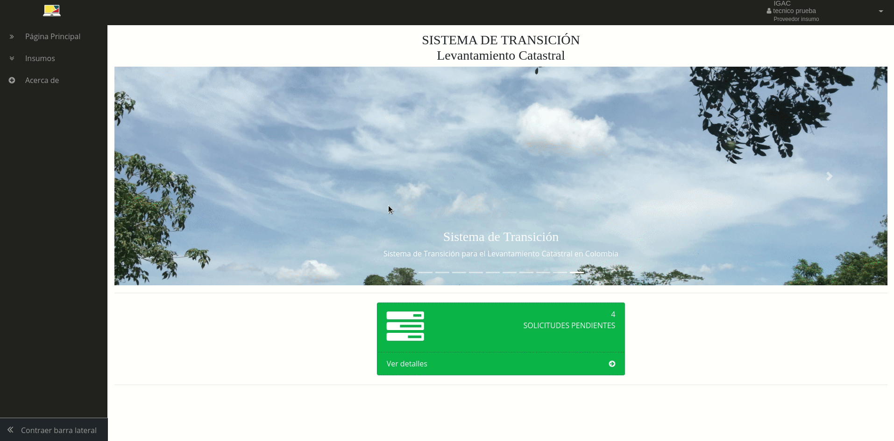
 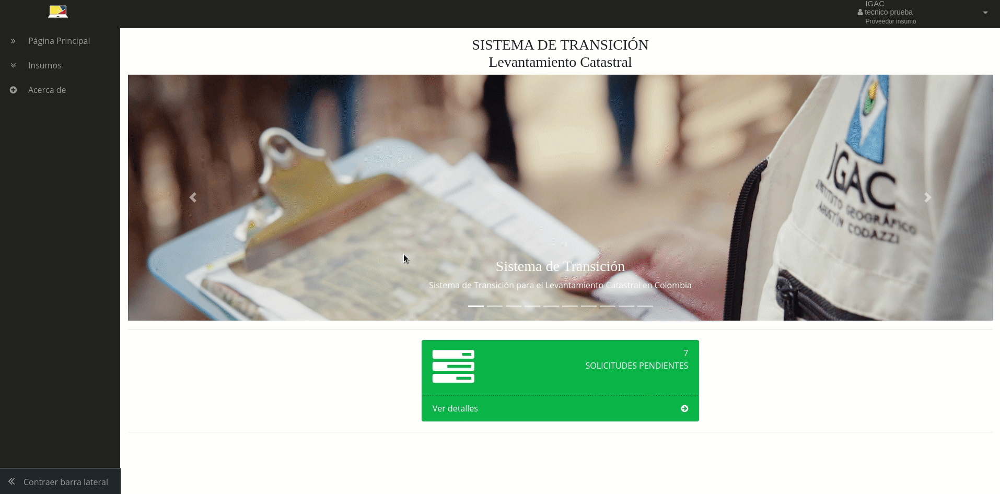
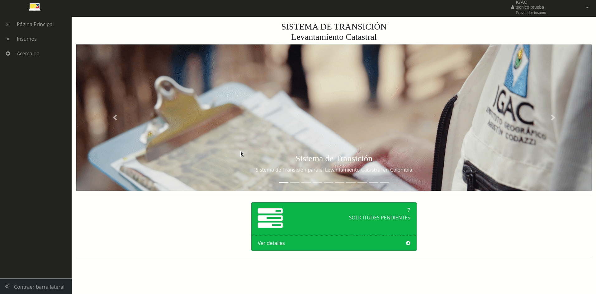
 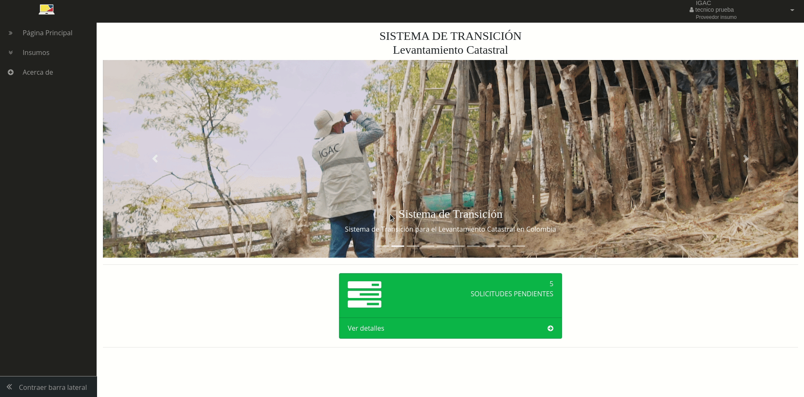
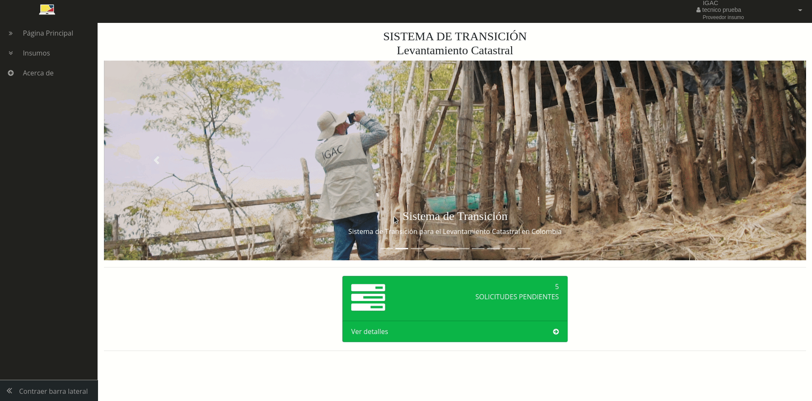
 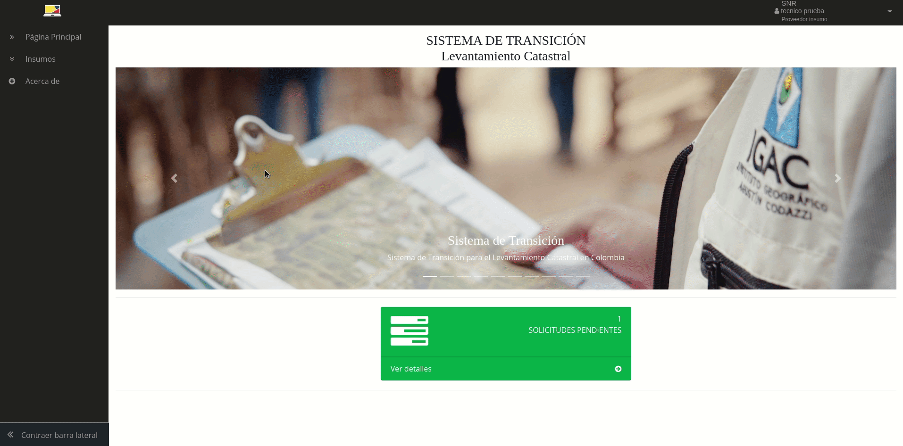
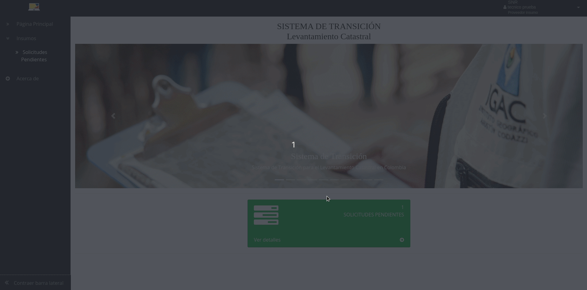
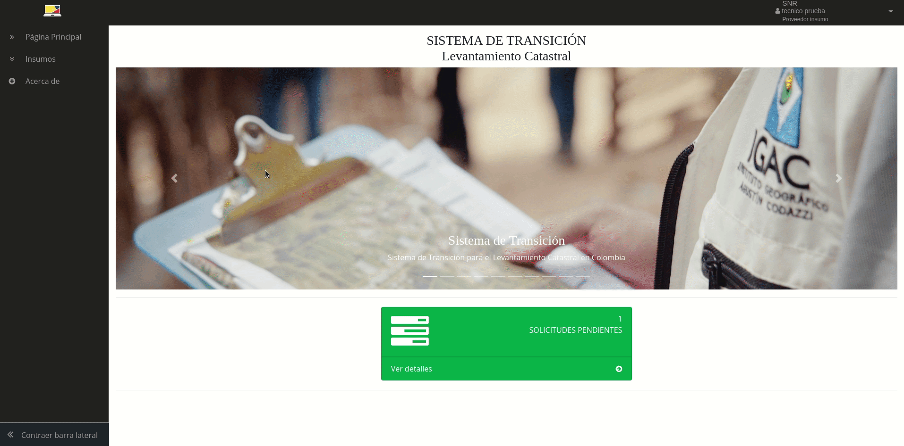
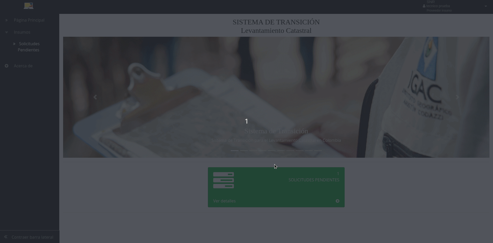
Cargue de insumo Catastral a través de la ETL Cobol-SNC (perfil Técnico)¶
Caso especial SNR (Revisión y cargue de adjuntos PDF “Cabida y Linderos”)¶
Solicitudes atendidas (perfil Técnico)¶